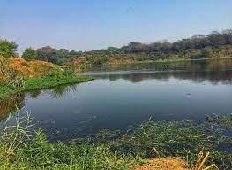
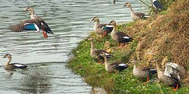
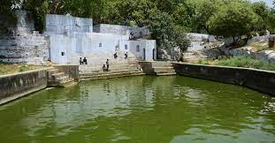

  
Neela Hauz biodiversity park, located on South Central Delhi Ridge of Aravalli range next to Sanjay Van, in Delhi, India, is a 3.90 hectares mini biodiversity and wetland area along Aruna Asaf Ali Road. It lies in the Northern Aravalli leopard wildlife corridor.In 2014, of the 611 water bodies in Delhi, 274 were dead and remaining were in bad shape. Neela Hauz is a freshwater lake which was slowly dying due to the dumping of waste.[6] During ancient times it use to be the main source of water supply for the Rajput city of Qila Rai Pithora. During ancient times, its basin was recharged by the wider dense forests of Sanjay Van and its overflow drained in to Yamuna. In 2014, the wetland was covered with water hyacinth and ridge was infested with the invasive species of prosopis juliflora(Vilayati Babul or Kikar of Mexican origin), which were planted in the 1920s by the Britisher colonisers to rehabilitate thewasteland. The silted up lake was encroached upon and raw sewage drained into it, causing concerned citizens to take anorder from Delhi High Court to have it restored by the government. After the restoration started in 2015, this biodiversitypark was officially inaugurated in November 2016. Delhi has 7,884 hectares of fragmented forests which are deprived of wild animals due to the unplanned urbanisation. In 2015,Delhi already had Aravalli Biodiversity Park and Yamuna Biodiversity Park. The Delhi Development Authority engaged the scientistof Delhi University to develop four more biodiversity parks in Delhi, including the Northern ridge biodiversity park (Kamla NehruRidge), Tilpath valley biodiversity park, Neelahauz biodiversity park and phase-2 of the Yamuna Biodiversity Park.